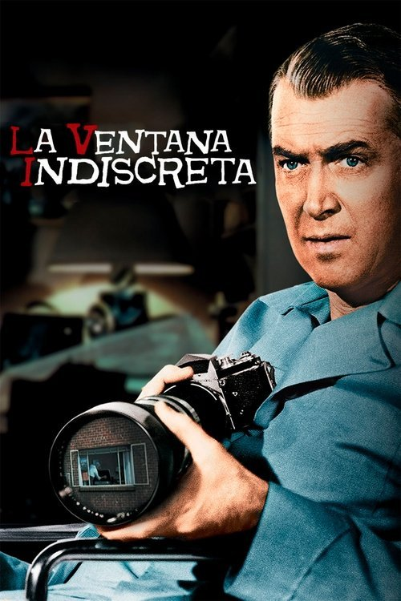

Thriller Psicológico: 8 Películas que te Dejarán con la Mente en Blanco
Sumérgete en el mundo de la mente humana con estos thrillers psicológicos que te mantendrán al borde del asiento.
- La ventana indiscreta (1954)
¿Qué sucede cuando la realidad se confunde con la paranoia desde la ventana de tu propio apartamento? Un reportero confinado descubre un misterio escalofriante que lo obligará a cuestionar su propia cordura.
 La piel que habito (2011)
La piel que habito (2011)¿Qué pasaría si el cirujano más brillante del mundo crea una piel artificial para ocultar un terrible secreto? Prepárate para una historia de obsesión, venganza y belleza inquietante.
 Terciopelo azul (1986)
Terciopelo azul (1986)Un hallazgo macabro en un campo de fútbol americano desata una espiral de violencia y misterio en la aparentemente idílica Lumberton, llevando a un joven a un mundo de perversión y oscuridad que pondrá a prueba sus límites.
 El sexto sentido (1999)
El sexto sentido (1999)¿Qué pasaría si el mundo que ves no es el real? Un niño con la capacidad de ver muertos deberá desentrañar un misterio que cambiará su vida para siempre.
 Prisioneros (2013)
Prisioneros (2013)Cuando dos niñas desaparecen misteriosamente, la desesperación de sus padres los lleva a tomar medidas desesperadas, cruzando la línea entre la justicia y la venganza en una carrera contra el tiempo.
 El efecto mariposa (2004)
El efecto mariposa (2004)¿Qué pasaría si pudieras viajar al pasado y cambiar tus decisiones, pero cada alteración desencadenara consecuencias catastróficas e impredecibles? Descubre el poder y el terror del efecto mariposa.
 Origen (2010)
Origen (2010)¿Qué pasaría si pudieras entrar en los sueños de otras personas y robarles sus secretos más preciados? Dom Cobb, un hábil ladrón de sueños, se enfrenta a la misión más peligrosa de su vida: implantar una idea en la mente de un poderoso ejecutivo.
 The Game (1997)
The Game (1997)¿Qué pasaría si tu vida se convirtiera en un juego mortal, donde la realidad y la ficción se desdibujan hasta el límite?